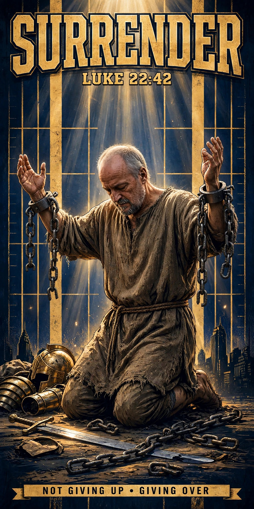

"Father, if you are willing, remove this cup from me. Nevertheless, not my will, but yours, be done."
Luke 22:42 (ESV)
Everybody told me to surrender — the judges, the counselors, the people who loved me and were running out of hope for me. And every time I heard that word, my heels dug in. In my world, surrender was what losers did. But surrender to God runs the other way. You don't surrender to God because He out-muscled you. You surrender because He is the only One in the field who is FOR you. The drugs were never for me. The road was never for me. The hands in the garden were pierced for me. In this episode: what I got wrong about the word 'surrender' for more than thirty years, and the night the word finally changed.
What I got wrong about surrender for more than thirty years
For more than thirty years I heard surrender as losing — as waving the white flag. That is not what surrender to God means. Surrender to God is not giving up; it is giving over to the One who is for you.
The night the word finally changed
The hands in the garden were pierced for me. When I saw Jesus pray, "Not my will, but yours, be done" (Luke 22:42), the word finally changed — from defeat to trust, from holding on to open hands.
Music: "Try As You Might" by Hayden Folker — licensed under Creative Commons Attribution 3.0 (CC BY 3.0).
My book 'Hope Met Me Where I Was' is coming December 16 — the full story of how Jesus met me in the middle of my mess.
Listen to this episode
Surrender, Part 1: Not Giving Up — Giving Over — Episode 5
Next time: Surrender, Part 2 — "The Cost of Holding On." The Surrender series continues. Subscribe so you don't miss it.
If this encouraged you, share it with someone who needs to hear it today. Remember: no judgement, real hope for wherever you are in life. Come as you are, and Lord willing, leave anchored.
Christ Proclaimed. Jesus is Lord.